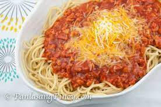

Filipino Style Spaghetti

Filipino Spaghetti is the Pinoy version of Spaghetti with meat sauce.
This version has a sweet tomato based sauce with lots of meat ingredients
such as ground pork, luncheon meat, and hotdogs. It is often
served during kids birthday parties along with some yummy fried chicken and cake.
Ingredients
- 2 lbs Spaghetti noodles
- 1 lb ground pork
- 6 ounces luncheon meat (minced)
- 4 pieces hotdogs or beef franks
- 35 ounces Filipino Style Spaghetti Sauce
- 1/2 cup shredded cheddar cheese
- 1 1/2 cups of beef broth
- 1 medium onion (minced)
- 1 taeaspoon minced garlic
- Salt and pepper to taste
- 3 tablespoons cooking oil
Steps
- Cook the Spaghetti noodles according to package instructions.
Once cooked, transfer to a bowl. Set aside.
- Heat the oil in a Pan.
- Saute the onion and garlic.
- Once the onions becomes soft, add the ground pork.
Cook until the color turns light brown.
- Add the luncheon meat and hotdog. Stir and cook for 2 to 3 minutes.
- Pour-in the Spaghetti sauce and beef broth.
Stir and let boil. Cover and simmer for 30 minutes.
- Try to taste the sauce and add salt and pepper if needed.
- Pour the Filipino Style Spaghetti sauce
over the Spaghetti. Top with shredded cheese.
- Serve. Share and enjoy!